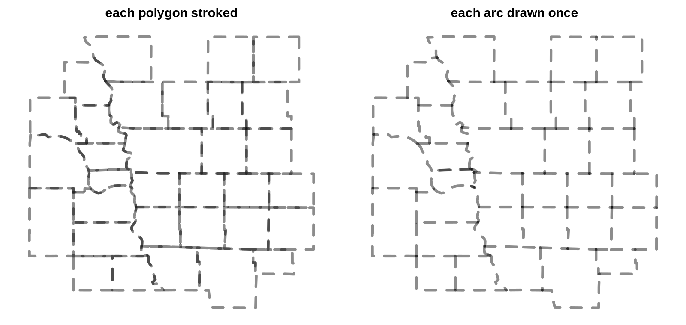
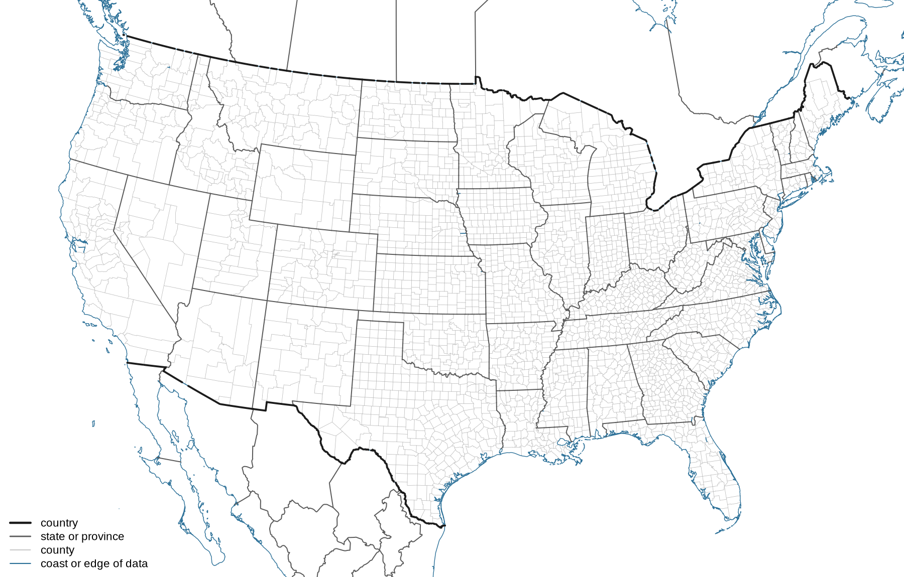
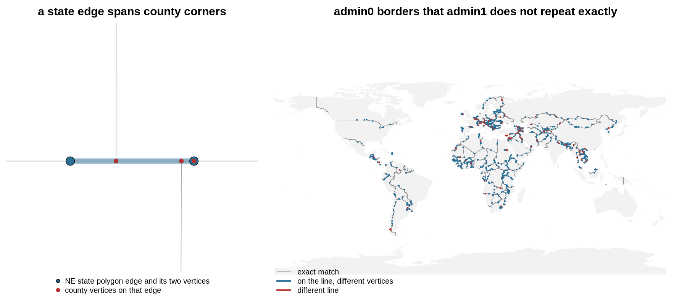

trianglewins / boundaries
Drawing each boundary once: shared edges, arcs and nested regions
Stroke a set of polygons and every shared border is drawn twice, once for each polygon on either side. With an opaque solid line nobody notices. With transparency the shared borders come out darker than the coast. With dashes the two copies run out of phase and the pattern turns to noise. With nested regions (counties inside states inside countries) a state line is drawn up to four times: two county outlines and two state outlines.

The usual fix is to get the lines from somewhere else. Natural Earth ships boundary line layers next to its polygon layers, partly for this reason. This page is about the other route: getting each boundary once, with its rank, from the polygons themselves. It is an old idea (ArcInfo coverages, TopoJSON, mapshaper and silicate all do it), but it is worth seeing in full, because the same table answers several questions at once and because the hard part is not where people expect.
The short version:
- A boundary is an edge with owners. Break every ring into segments and match each segment with its reverse. An edge with two owners is a shared border. An edge with one owner is a coast, a lakeshore or the edge of the data.
- Nesting is a lookup, not more geometry. Give each polygon its parent ids (state, country). An edge's rank is the coarsest level at which its two owners differ. County, state and country lines then all come from the county polygons, each drawn once.
- Arcs are the drawable form. Chain edges between junctions into arcs (TopoJSON's arcs, silicate's ARC model). Dashes, smoothing and labels then follow the line, not the polygon.
- The hard part is vertex identity. Matching needs the two sides of a border to carry the same vertices. Within one Natural Earth layer they do: no edge has more than two owners anywhere in the world. Between layers they often don't, even in one curated product.
The script for every number and figure here is survey/boundaries/boundaries.R.
It uses sf and wkpool and reads Natural Earth 10m layers from
GitHub.
A boundary is an edge with owners
A polygon layer stores each shared border twice: once in each polygon's ring, running in opposite directions. Pool the vertices, so that the same coordinate gets the same id in every ring, and the two copies of a segment become the same pair of vertex ids. Then count owners:
library(wkpool)
pool <- merge_coincident(establish_topology(wk::as_wkb(counties)))
s <- pool_segments(pool) # .vx0, .vx1, .feature
key <- paste(pmin(s$.vx0, s$.vx1), pmax(s$.vx0, s$.vx1))
owners <- split(s$.feature, key) # one entry per distinct edge
n <- lengths(owners) # 1 = outer, 2 = sharedfind_shared_edges() and
find_internal_boundaries() in wkpool return the same thing
in other shapes. For the 3,224 US counties in Natural Earth, the 144,029
ring segments become 90,151 distinct edges: 53,878 shared, 36,273 with
one owner, and none with more than two. The whole step takes under a
second.
The owner counts are a check in themselves. In a clean coverage (polygons that tile without gaps or overlaps) every edge has one or two owners. More than two means overlapping polygons. One owner where you expected two means a gap, a sliver, or two neighbours that don't share vertices, which is the subject of the last section.
"One owner" mixes three things a map maker treats differently: a coast, a lakeshore and the edge of the dataset. The edge table can't tell them apart, and neither can the polygons. If the US counties are the whole dataset, the Canadian border has one owner just like the Pacific coast. Adding the neighbours is what turns it into a shared border.
Nesting is a lookup
Each county carries its state code. A shared edge between two counties in the same state is a county line. If the two states differ, it is a state line. Add the Canadian and Mexican provinces to the same pool, give every polygon a country, and an edge whose owners are in different countries is a country line:
rank_of <- function(a, b, levels) {
# levels: named list of parent ids per polygon, coarsest first
r <- rep("outer", length(a))
for (nm in rev(names(levels))) {
lv <- levels[[nm]]
r[!is.na(b) & lv[a] != lv[b]] <- nm
}
r
}(The loop runs finest first, so a coarser level overwrites it.) From one pool of 3,224 counties and 46 Canadian and Mexican provinces, the 174,483 edges split into 44,562 county, 20,536 state or province, 2,060 country and 107,325 outer. No geometry was computed beyond the vertex pool. The counties never had to be dissolved into states, and the states never had to be intersected with each other.

This is how the parent ids are meant to work. They need to be a true hierarchy, where every county is in exactly one state. They don't need to be complete. The provinces here have no counties, so a province is its own "county" and the county level adds nothing for them. Any number of levels works the same way: a statistical area inside a county inside a state. The levels don't even have to come from the same source, as long as the geometry does.
The same rank is what mapshaper's -lines command
computes when given a list of fields, and
rmapshaper::ms_lines(x, fields) exposes it from R.
TopoJSON's mesh(topology, object, (a, b) => a !== b)
does the two-level case in the browser. If you need the lines today and
your polygons share vertices, these work.
Arcs are the drawable form
An edge table is one row per segment, and drawing segments one at a time gives bad joins and restarts every dash. The drawable unit is the arc: a run of edges between junctions, where a junction is a vertex with three or more distinct edges, or the end of a line. Along an arc the owner pair doesn't change, because it can only change where a third polygon touches the line, and that is a junction. So an arc has one rank.
find_arcs(pool, quotient = TRUE) in wkpool returns the
arcs as vertex id paths. The quotient argument collapses
the two copies of each shared edge first, which is exactly the TopoJSON
arc decomposition. The 32 counties in the first figure have 762 ring
segments, 421 distinct edges and 92 arcs. That figure draws the 92 arcs
with one plot() call.
Arcs are also where simplification belongs. Simplify each polygon on its own and the two copies of a shared border move differently, opening gaps and slivers. Simplify each arc once, and both neighbours get the same result. This is why mapshaper and TopoJSON simplify topologically, and why GEOS 3.12 added coverage simplification.
The hard part: do the two sides share vertices?
Everything above needs both copies of a shared border to use the same vertices. Exact coordinate matching is the first rung of the project's vertex identity ladder: exact, then tolerance (snap nearby vertices), then noded (split segments where other vertices or segments touch them), then exact construction. Natural Earth is a good test because it is carefully built, and it still needs more than the first rung as soon as two layers meet.
Within one layer, exact matching works. In the world admin0 countries (475,560 edges) and the world admin1 states and provinces (847,302 edges) no edge has more than two owners. The two layers' outer lines agree to within 0.01%.
Between levels, the vertices drift. Take the country borders from the admin1 layer (the edges whose owners are in different countries) and look for each shared edge of the admin0 layer among them:
| admin0 shared edge length found in admin1 | share |
|---|---|
| as the same segment, exactly | 96.83% |
| on the same line, with different vertices | 2.74% |
| on a different line | 0.43% |
| more than 0.1 degree away | 0.09% |
The middle row is the common failure. The line is the same, but one layer has a vertex partway along a segment of the other. The left panel below shows the US version: a straight stretch of the Kansas and Nebraska line in the Natural Earth state polygons is one segment, while the county polygons put a vertex at every county corner along it. Exact matching calls that segment unshared. Of the shared edge length in the state polygons, 78.20% is found exactly in the county layer, 21.77% lies on the county lines with different vertices, and 0.03% elsewhere. Snapping doesn't fix this, because no vertex is close to another vertex. Noding does: split each segment at the other layer's vertices that lie on it, and the pieces match.

The bottom row is real disagreement, and it is not random. The largest pieces are around Cyprus's buffer zone, the Southern Patagonian Ice Field against Chile and Argentina, Bir Tawil against Sudan, and the Iran-Iraq and Jordan-Syria borders. These are disputed or specially-treated areas, and the two layers were edited at different times or for different viewpoints.
Across products, both happen at once. The US counties and the Canadian and Mexican provinces come from different Natural Earth layers. About 91% of the length of the land border in the admin0 layer is recovered as a shared country edge. Most of the rest has a county on one side and a province on the other that put their vertices in different places along the same line. Those pieces come out as "outer" and leave the gaps visible along the 49th parallel in the second figure.
Three things follow:
- Derive coarse lines from the finest level, not from separate layers. The county-derived state lines and the county lines are guaranteed to meet, because they are the same edges. Mixing a state layer with a county layer brings back the doubled-line problem, now with slightly different lines.
- Check owner counts before trusting the result. One owner where the map says there is a neighbour is the signature of vertex drift. The owner table is a validity check for the coverage, the companion to the per-polygon checks on the validity page.
- Noding is the rung that fixes it. A constrained
triangulation of the pooled linework (cdtr, laridae) nodes as it goes:
it splits each constraint where another vertex lies on it. The mesh
spec's
edge_sourcestable then records which input segments cover each mesh edge. That is this page's owner table, built on noded edges.
Some lines are not polygon edges
The edge table only finds borders that are polygon edges, and Natural Earth's line layers carry more than that:
- Water boundaries. The US-Canada border through the Great Lakes is not an edge of any land polygon. Counties and provinces stop at the shore, and the lake is not a polygon in either layer. The lines layers have it because it is a line in its own right.
- Viewpoints. The Natural Earth boundary layers carry
FCLASS_*columns that say how each line should be drawn from the point of view of different countries: international, disputed, or not drawn. No owner table can derive that, because it is a fact about the line, not about the polygons on either side. - Lines with no area on one side. Lines of control, ceasefire lines and indefinite boundaries end in the middle of land.
So the shipped line layers are not a workaround. They hold information the polygons don't have. Derived edges are for everything else: any polygon layer, any hierarchy of attributes, including your own regions, and lines that are guaranteed to agree with the polygons they came from.
Tools
| Tool | Gives | Hierarchy | Notes |
|---|---|---|---|
| wkpool | vertex pool, owner table, find_arcs() |
your own lookup, as above | exact or tolerance (merge_coincident(tolerance =)) |
| silicate | SC, ARC models: edges and arcs with object
links |
your own lookup | the models these ideas come from |
| rmapshaper | ms_innerlines(), ms_lines(fields =) |
yes, through fields | runs mapshaper in V8 |
| TopoJSON | arcs, mesh() with a filter |
two levels through the filter | the web standard for shared arcs |
| GEOS 3.12+ | coverage union and simplification | no | shapely coverage_simplify(); check your R binding |
| sf | st_intersection() of boundaries, pairwise |
no | works, but slow and loses arc structure |
Lines derived in longitude and latitude are straight in those coordinates. When you draw them in a projection, as the second figure does, each segment is straight in longitude and latitude, not on the ground. The curves page has more on what that edge means.